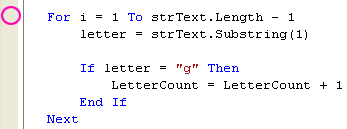
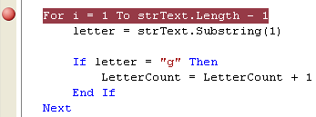
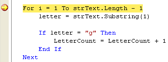
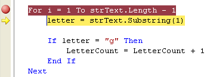
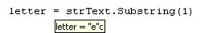
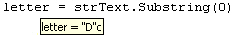
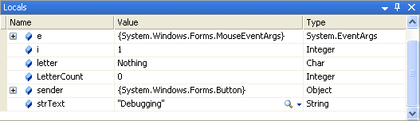
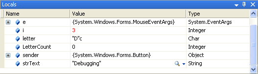

Breakpoints and Debugging Tools
This lesson is part of an ongoing tutorial. The first part is here: Design Time Errors
In the last part, you added some code to a button. All the code does is try and count how many times the letter "g" appeared in the word "Debugging". We saw that the programme failed to do this, and came up with the answer zero. To help you find out what went wrong, there is a tool in VB .NET called a Breakpoint. Let's see what this is, and how to use Breakpoints.
Breakpoints
A breakpoint is like a note to VB.NET to stop your programme at a particular place. You add one to your code by clicking in the margins. A brown circled then appears, indicating where the code will break. The following two images show how to add one:

When you click in the margins, to the left of a line of code, a brown circle appears:

Notice that the line where you want VB.NET to break is highlighted brown.
Run your programme, and click the button. You are immediately returned to the coding window. The place where you put the Breakpoint will now have a yellow arrow on top of the brown circle. The brown highlighted line will now be yellow:

The yellow highlight indicates where in your code VB.NET is. To continue checking your code, press F10 on your keyboard (you can also press F11, but this will jump into any Subs or Functions you've set up.)
The next line in your code will be highlighted:

The yellow arrow, and the yellow highlight, jump down one line. Press the F10 key again. Then hold you mouse on the letter variable. The value this variable currently holds will be displayed:

The first time round the loop, the value in letter is "e" (The "c" next to it means that the variable type is Character).
If the "e" of "Debugging" is getting checked first, what happened to the "D"? Straight away, this indicates a problem. And the problem is that the Substring method starts counting from zero. So halt your programme by clicking "Debug > Stop Debugging", or click the Stop icon on the toolbar. Change the line in question to this:
letter = strText.Substring(0)
Run your programme again, and click the button. When you are returned to your code, press the F10 key and check the value of the letter variable. It should now be this:

This time, the code is catching the first letter of the word when the loop begins, and not the second one.
Is that it? Have we found the cause of our problems? Stop your programme. Click on the brown circle to get rid of the Breakpoint. Run it again, and see what happens.
The number of G's counted is still zero! So the logic error has not yet been tracked down. Create another Breakpoint at the same place, and try again.
You can continue pressing the F10 key until you've spotted the error. Or you can use another debugging tool - the Locals window.
While your programme is still in Debug mode (the yellow line will still be
there, if it is), click Debug > Windows > Locals from the menu
bar. You should see the following in the bottom left of your screen:

Locals means "Local variables". That is, variables declared in this section of the code. The variables i, letter and LetterCount are showing in the window. The value of these variables is also displayed: 0, Nothing and 0. Press F10 and these values will change. This is the Locals window after one go round the loop:

The variable i is now 2; letter is "D", and LetterCount, is still 0. Keep pressing F10 and go round the loop a few times. What do you notice?
You should notice that the value in letter never moves on. It is "D"
all the time. And that's why LetterCount never gets beyond 0.
Exercise J
Why does LetterCount never gets beyond 0? Correct the code so that your textbox displays the correct answer of 3 when the programme is run.
And that's it for Error checking and debugging. It can often be an art form in itself. But one well worth persevering with: it could save you a lot of headaches!
In the next section, we'll move on and have a look at what arrays are.